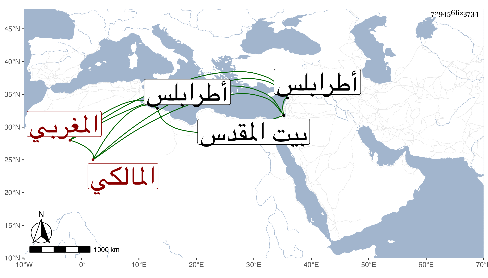

0902Sakhawi.DawLamic.ITO20230111-ara1.EIS1600.729456623734
Biography ID: 729456623734
507
عيسى بن محمد الشرف التجاني المغربي المالكي . سمع على الجمال الحنبلي وولي قضاء طرابلس ثم القدس وذكره الزين رضوان فيمن يؤخذ عنه ووصفه بالشيخ الإمام وأظنه عيسى المغربي الآتي قريبا والسابق عنه في أحمد بن محمد بن محمد بن عبد الله المغراوي كلمات بينه وبين البساطي .
